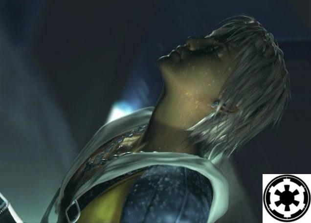

Forums galactiques > Assemblée Galactique : diplomatie officielle > Volkow
Pages : 1 2
| Tidus Le Grand II Respect diplomatique : 1  29/03 ETU 15:27 | Score : 1 Détails Quand on a un soupson de jugote et de diplomatie on apprend a refouler ses sentiments pour ne pas tuer n inporte qui a n inporte quel momment.Cela pour eviter d eventuelles guerres qui est, je pense (reprenez moi si je me trompe) preferable d eviter tout du moin si on est pas sadique.
Et je pense que des personnage comme vous qui foutez la*****(excusez cette expression) sont des danger publique | ||
| Wolverine Respect diplomatique : 2271  29/03 ETU 15:32 | Score : 4 Détails Non, p'tit bonhomme (J'ai un doute sur le terme ?) ... Faut recruter sur dossier avec enquête de moralité et profil psychologique ...
Y a aucun espion dans la Ligue des Gentlemen Extraordinaires. Ceux qui sont venus sont tellement sûrs que je leur filerais mon pyjama jaune et bleu à nettoyer les yeux fermés ... Même à la Javel ... Y a deux solutions pour une coalition qui se lance : recruter le premier clampin qui veut couiner ici ou recruter des gens qu'ont le bon esprit. Y a aussi la solution Cronos : tu recrutes n'importe qui, tu abandonnes tes potes à la première occasion et tu refais une coalition avec des arrivistes et des aventuriers ... Le pire de tout, c'est qu'en prime, Cronos trouve des volontaires pour prendre la prochaine baffe à sa place. Moi, je recrute ceux qui en ont, ceux qui ont envie de travailler en "team", ceux qui ont des idées et l'ambition de réussir en tant que "bande de potes" ... On sait qui on voudrait recruter et ces commandants ont reçu une invitation. D'autres n'ont pas reçu d'invitation mais, s'ils se reconnaissent, ils m'enverront un MP s'ils sont intéressés. Donc, ouais, je suis sûr aujourd'hui de n'avoir aucun espion dans la coalition. Et je suis prêt à parier que personne trahira. Je veux pas des apprentis "grands commandants", je veux des amis. | ||
| Général_CSI Respect diplomatique : 75  29/03 ETU 15:32 | Score : 3 Détails Vos excuses sont acceptées cher Eschemir.
| ||
| Volkow Respect diplomatique : 377  30/03 ETU 17:53  | Score : 3 Détails L'Empereur Volkow se releva à nouveau et s'installa sur l'estrade.
<<- Je vous que mon discours a pu créér un sujet de discussion...Mais je tiens à vous dire à tous, et toutes, que je ne suis pas un espion.Je suis honnête et juste et je ne recherche qu'une coalition droite, sérieuse mais oû l'ambiance peut être décontractée.Je suis prêt à mettre en péril tout mon Empire pour la dite coalition.Je suis donc, comme je l'ai dit précédement, ouvert à toute proposition...>> Puis il se rassit, attendant l'intervention d'un Empereur. | ||
| Erold Savostos. Respect diplomatique : 138  30/03 ETU 18:24 | Score : 6 Détails [HRP : Desole pour les accents, mais je tape depuis un clavier Anglais...]
" Un homme gras et plutot volumineux se leva et s'adressa au commandant Nikea." Comment osez-vous ?! L'Amiral Tarkan est une personne tout a fait remarquable de par ces faits et propos ; vos paroles de serpents ne sont que pure affabulations. Il est tout a fait legitime de vouloir defendre un ami a vous ou une connaissance, mais faites le alors avec dignite et politesse. Aussi, je vous previens : ne recommencez pas ce genre de choses ou vous risquerez l'incident diplomatique, ou pire, la declaration d'hostilite envers votre nation. A bon entendeur, salut. " L'etrange personnage se rasseya avec lourdeur." | ||
| Alex Rider Respect diplomatique : 748  30/03 ETU 18:24 | Score : 1 Détails Le Syndicat vous ouvre ses portes, Volkow...si vous voulez en voir une description complète, faites un tour dans le topic "Création du Syndicat", ici, à l'Assemblée (page 3).
| ||
| Gemnoth-Sinn Respect diplomatique : 358  31/03 ETU 15:25 | Score : 0 Détails la Confédération est également ouverte aux commandants débutants.
la constitution se situe en dessous. | ||
| Volkow Respect diplomatique : 377 02/04 ETU 19:12 | Score : 0 Détails Volkow se releva, se tourna vers tous ces Empereurs et dit d'une voix forte:
<<J'irais voir toutes vos coalitions ainsi que leurs constitutions.Je vous remercie de toutes vos offres.>> Puis il se rassit et contempla le plafond de la salle qui était d'un bleu très profond avant de recommencer à observer les Empereurs présents dans la salle. |
Pages : 1 2
Forums galactiques > Assemblée Galactique : diplomatie officielle > Volkow